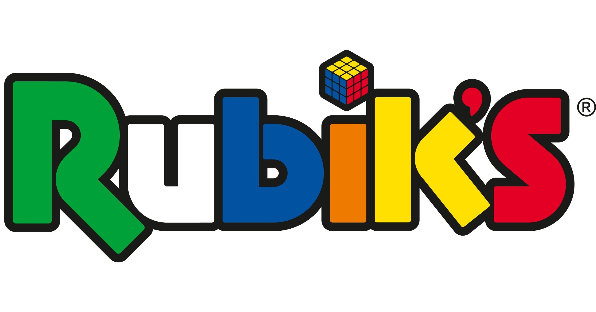

Esta marca es la primera que se origino a la vez que se creo el cubo de rubik, con el creador Ernö Rubik que teneis toda la informacion de él en el link.
Esta marca no suele ser muy buena, aunque esta sea la mas conocida, los cubos de esta marca habituan a ser de gama baja/media. Aunque sean de este tipo de gamas, estan bien para iniciar en el mundo de la solucion de cubos de rubik ya que aun asi tienen bastantes mas que el cubo habitual de 3x3x3, como puzles y variazciones del cubo habitual.
Aunque para el mundo del SpeedCubing los cubos no son muy buenos , para el mundo del coleccionismo de los cubos de Rubik suele ser una marca bastante buena, ya que, como he dicho antes, esta marca tiene muchos tipos de puzles cubos y variaciones de estos, que pueden ayudarte a aumentar tu coleccion.
Ernő Rubik, profesor de arquitectura húngaro, crea un prototipo de cubo tridimensional. En los años siguientes, Rubik lo utilizó para enseñar a sus alumnos sobre espacios tridimensionales.(1974)
Ernő Rubik patenta el mecanismo utilizado en su cubo 3D, ahora conocido como Cubo Mágico.(1975)
A medida que el Cubo Mágico se hizo más popular en Hungría, las exportaciones estrictamente controladas de la Hungría de la era comunista complicaron el crecimiento continuo. Ernő, siempre solucionador de problemas, se dio cuenta de que la solución eran las ferias internacionales de juguetes.(1977)
El Cubo Mágico fascina al público de las ferias de juguetes de Londres, París, Nueva York y Nuremberg. (1979)
El Cubo Mágico pasa a llamarse "Cubo de Rubik" y ¡el mundo nunca volverá a ser el mismo!(1980)
La marca Rubik's lanza un nuevo e innovador rompecabezas donde los usuarios podrán crear formas únicas. Rubik's Snake vende instantáneamente millones de unidades en todo el mundo.(1981)
